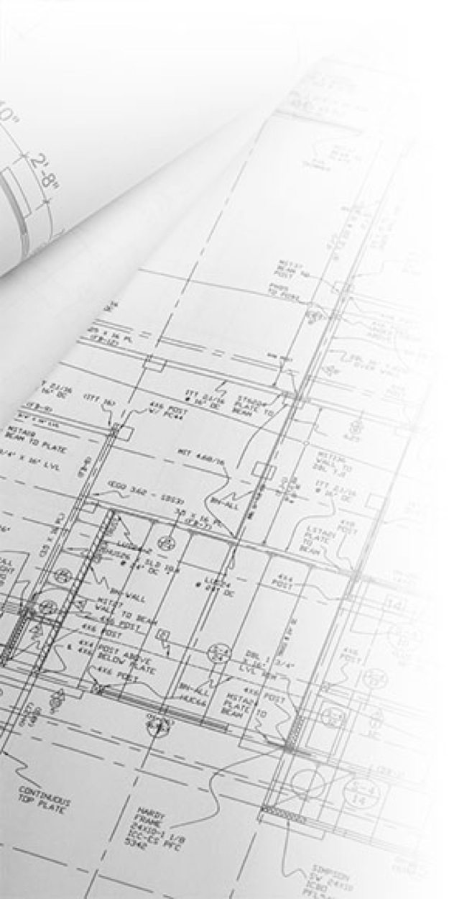

[π]ροφίλ • [υ]πηρεσίες • [ν]έα • [ε]πενδύσεις • [p]ortfolio • [σ]ύνδεσμοι • [b]log • [ε]πικοινωνία

Τ³ - Σύμβουλοι / Μελετητές / Επιβλέποντες / Κατασκευαστές Μηχανικοί
Ημερολόγιο νέων
Στην παρούσα σελίδα παρουσιάζεται σε μορφή ιστορικού πίνακα (οι νεότερες καταχωρήσεις στην κορυφή) μια συλλογή σημαντικών ημερομηνιών θεμάτων που αφορούν μεταξύ άλλων μηχανικούς, την αγορά, την μελετητική, αλλά και κατασκευαστική πραγματικότητα του τρέχοντος έτους. Η λίστα ενημερώνεται κατά συχνά διαστήματα.
Σημείωση: Για να προωθηθείτε σε εξωτερικές σελίδες διευκρινήσεων ή τις πρωτογενείς σελίδες των αντιστοίχων νέων ακολουθείστε τον σύνδεσμο ••• στο πλάι κάθε ανάρτησης, όπου το σύμβολο αυτό υπάρχει.
2011
21/09/2011 - Παράταση της καταβολής της 1ης δόσης του Ν.3843/2010 μέχρι και 30.12.2011 •••
09/07/2011 - Υποχρεωτική η έκδοση Π.Ε.Α. για την μίσθωση ακινήτων •••
23/06/2011 - 3η παράταση στις δηλώσεις του Ν. 3843/2010 μέχρι τέλος Οκτωβρίου •••
06/06/2011 - Εξετάζεται το “πάγωμα” της αναθεώρησης των αντικειμενικών αξιών μέχρι και το 2012
16/05/2011 - 1η παράταση του προγράμματος “Εξοικονόμηση κατ’ Οίκον” •••
04/04/2011 - “Έρχεται φορολογικό τσουνάμι στα ακίνητα” •••
31/03/2011 - Λήξη του προγράμματος “Εξοικονόμηση κατ’ Οίκον”
30/03/2011 - “Πτώση 11% στην οικοδομή το 2010” •••
28/03/2011 - 1η παράταση αιτήσεων συμμετοχής στο Πρόγραμμα “Εξοικονόμηση κατ’ Οίκον” •••
20/03/2011 - Πτώση στις τιμές του οικοδομικού χάλυβα
01/03/2011 - Διαθέσιμη η έκδοση 1.28 του λογισμικού ΤΕΕ - ΚΕΝΑΚ •••
28/02/2011 - Λήξη της 1ης παράτασης της “ρύθμισης” των Η/Χ βάσει του Ν. 3843/10 •••
24/02/2011 - 2η παράταση στις δηλώσεις του Ν. 3843/2010 μέχρι τέλος Ιουνίου •••
01/02/2011 - Έναρξη του προγράμματος “Εξοικονόμηση κατ’ Οίκον” •••
09/01/2011 - Πιστοποιητικό Ενεργειακής Απόδοσης (Π.Ε.Α) απαραίτητο για αγορές / μισθώσεις κτιρίων > 50μ²
2010
31/12/2010 - Επίσημη ημερομηνίας 1ης λήξης της “ρύθμισης” των Η/Χ βάσει Ν. 3843/10 •••
10/12/2010 - 1η παράταση στις δηλώσεις του Ν. 3843/2010 μέχρι την 28 Φεβρουαρίου 2011
18/11/2010 - Δήλωση πως οι αντικειμενικές αξίες ακινήτων θα αυξηθούν κατά το 2ο εξάμηνο του 2011
18/11/2010 - Αναστολή του “πόθεν έσχες” για αγορά 1ης κατοικίας για διάστημα 2 ετών •••
08/11/2010 - Δίνεται σε χρήση η τελική έκδοση του λογισμικού του Τ.Ε.Ε. για τον Κ.Εν.Α.Κ •••
01/10/2010 - Αρχίζει η εφαρμογή της ισχύος του Κ.Εν.Α.Κ. για νέες άδειες •••
01/10/2010 - Λήξη υποβολής αιτημάτων ελέγχου για επαγγελματίες που έχουν υπαχθεί στο ΕΣΠΑ
14/09/2010 - Παράταση προθεσμίας υποβολής ηλεκτρονικού αιτήματος ελέγχου ΕΣΠΑ μέχρι 01/10/2010
10/09/2010 - Έναρξη ελέγχου των οικοδομικών αδειών του 2009, των οποίων ο αριθμός λείγει σε “5”
07/09/2010 - Αύξηση στην τιμή του οικοδομικού χάλυβα της τάξης των €30/τόνο
16/08/2010 - Έναρξη υποβολής αιτημάτων ελέγχου για επαγγελματίες που έχουν υπαχθεί στο ΕΣΠΑ
09/07/2010 - Αναστέλλεται έως 01/10/10 η υποβολή ενεργειακών μελετών για την έκδοση οικοδ. αδειών
04/07/2010 - Αύξηση στην τιμή του οικοδομικού χάλυβα κατά περίπου 5%
01/07/2010 - Τίθεται σε ισχύ ο αυξημένος συντελεστής Φ.Π.Α 23%
15/06/2010 - Εκδίδεται η διευκρινιστική εγκύκλιος 8 σχετικά με τον Ν. 3843/10
19/05/2010 - Αλλαγή του συντελεστή λ στην Πολεοδομία Κοζάνης
11/05/2010 - Μικρή ολίσθηση στις τιμές του οικοδομικού χάλυβα
03/05/2010 - Εκδίδεται η διευκρινιστική εγκύκλιος 5 σχετικά με τον Ν. 3843/10
30/04/2010 - Επανέρχονται τα υπόγεια στο 1,50μ.
28/04/2010 - Εκδίδεται ο Ν. 3843/10 σχετικά με την “τακτοποίηση” των Η/Χ
30/03/2010 - Υποχρεωτική η γνώση του Α.Μ.Κ.Α. για δηλώσεις Ι.Κ.Α. μέσω Internet
29/03/2010 - Σημαντική αύξηση της τιμής του έτοιμου σκυροδέματος κατά περίπου 8%
15/03/2010 - Τίθεται σε ισχύ ο αυξημένος συντελεστής Φ.Π.Α 21%
Συντελεστές
λ = λ’ = €0,23253
ΤΑ = €118
ΜΗ = €61,93
ΤΗ = €29,39
Τ3 Κατασκευή και Ανάπτυξη Τουρτούρας Β. Φόρη 2 Κοζάνη 501 00
T3 Construction and Development Tourtouras V. Fori 2 Kozani 50100